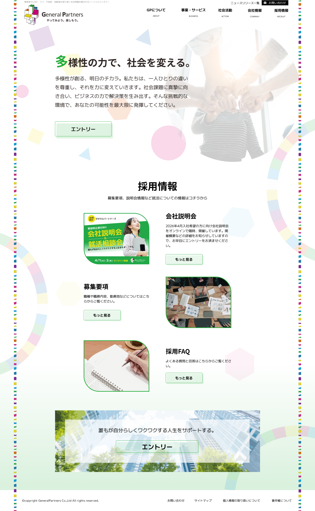

制作範囲 Range
メインビジュアルのデザイン
使用ツール Tool
Figma
制作期間 Period
2日間
制作メンバー Member
4名
サービス設定 Premise
- 同社は障害者雇用支援や福祉事業を通じ、誰もが能力を発揮できる機会を創出するソーシャルビジネスを展開。
- ビジネスの力で社会課題に挑む企業の姿勢と、その熱量を伝えるプラットフォームとして設計。
ターゲット Target
社会貢献への意欲が高い26卒の大学生・大学院生
キャリアに対して前向きな層
目的 Purpose
就活生に対し、社会課題への挑戦を「ワクワクするもの」として提示し、エントリー意欲を高めること。
他社に多いブルー系とは異なる配色で差別化を図り、記憶に残るサイト体験を提供。
情報設計 Information
「1000pxのコンテンツ幅」を基準に要素を整列させ、信頼感のあるレイアウトを構築。
情報の近接を意識して見出しと本文の距離を最適化。
ユーザーが迷わず主要な採用情報にアクセスできる可読性の高い導線を確保。
デザイン Design
「多様な色が織りなす、前向きな社会」をコンセプト。
#FFFFFF
#1E1E1E
ロゴカラーを用いた多色使いのサークルで多様性と繋がりを表現。
フォントの対比や白地の活用により、ポップさとビジネスサイトとしての誠実さを両立。
その他 Others
下に添付した画像は、PCのデザイン完成稿です。
